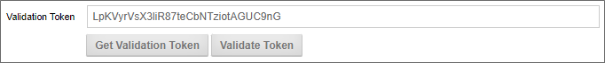
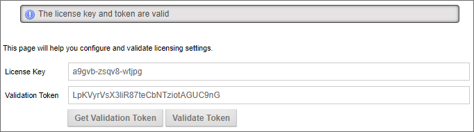

Licensing
You must add a license key after installation to activate Process Director from the Licensing page.
- Enter the license key that was sent from BP Logix into the License Key text box.
- Generate a Validation Token using either
- The Get Validation Token button which launches a web page that displays the validation token, or
- Pasting the Validation URL displayed on the Licensing page into any Internet connected browser.
- Copy the Validation Token displayed on the registration page that was opened in Step 2, and paste it into the Validation Token text box on the Licensing page.
- Validate the token by clicking the Validate Token button to complete the registration.
 The Validation Token is generated from an evaluation of certain technical characteristics of the server on which Process Director is installed. Each Validation Token is specific to the server that requested the token. Validation Tokens can't be transferred from one server to another, as each token is unique to the server that generated it.
The Validation Token is generated from an evaluation of certain technical characteristics of the server on which Process Director is installed. Each Validation Token is specific to the server that requested the token. Validation Tokens can't be transferred from one server to another, as each token is unique to the server that generated it.
 Reregistering your License
Reregistering your License
Some Process Director licenses have an expiration date, and this requires that the license be reregistered to keep using the software after the registration expires. To reregister your license, go to the Licensing page of the Installation Settings section, and perform the following procedure:
- Click the Get Validation Token button, which will launch the BP Logix Product Validation Page as a pop-up web page.

- Click the Get Validation Token button on the pop-up web page, which will create new validation token for your license.

- Copy the new validation token from the Pop-up web page, and paste it into the Validation Token field on the Licensing page. (You can now close the pop-up page.)

- Click the Validate Token button to validate the new license token. When you do, a status message will appear letting you know that the license and token are valid.

Your Process Director license has now been properly re-registered.